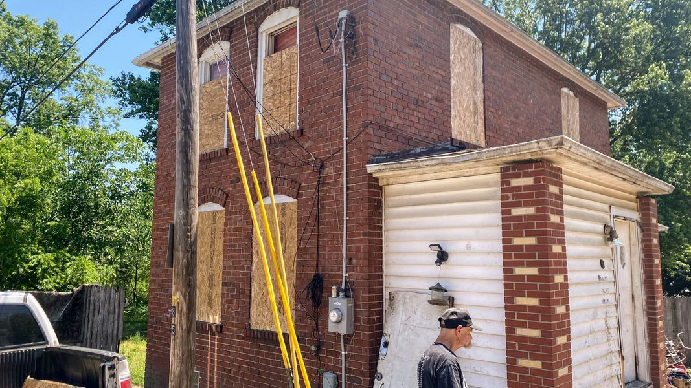

Timeline photos
Yesterday we boarded up all the windows on our house that shelters homeless people. Today I will be finishing that work on boarding up the doors. I will also be signing a no trespassing document so the police can arrest anyone at the house from this point forward.
In all the years I've done this work, ironically, I have made more people homeless than most people in Akron.
These people are going back into the woods. They're putting up tents. And they will live in fear of someone else kicking them out of yet another location.
After Hurricane Katrina, Cesar Milan asked to be sent 3 of the hardest dogs they had to shelter. That has always stuck with me.
That's who I want to work with too. I want the hardest cases.
Right now I have 1 man who is banned from taking showers and washing his clothes at Community Support Services. And I have another man that is banned from Haven Of Rest for 60 days because he didn't sleep there one night. (If you go to the Haven you have to sleep there every night. They will kick you out if you miss a night. There are countless reasons you can be kicked out of the only men's shelter in Akron.)
Those are the people I want to work with.
I see myself in them. I could easily be them. I'm just rich. That's the only difference.
But the difference between me and Cesar Milan is that he is legally allowed to shelter these hard-case dogs. I'm not legally allowed to shelter these hard-case people.
And the truth is: we, as a society, have more compassion for a dog than we do a dirty, ugly, addicted homeless person.
So I'm fought every step of the way.
They don't want me to help these people.
The unspoken solution is to ignore them and if they suffer enough then maybe they will come around to our way of doing things.
I believe it is the most cruel of all solutions. Exterminating them would be more humane than what we are currently doing. But, of course, we won't do that because then WE would be judged, not them. Letting them suffer and rot, ignored on the streets is the best possible solution: FOR US.
We can sit back and judge and blame them because we are doing nothing. The sin of omission is always more acceptable than the sin of commission.
I have commited the sin of commission. And therefore it is SO easy for people to turn their blame and judgement on me as well.
SAGE is enabling these people.
SAGE is running a drug and sex house.
SAGE is doing it all wrong.
It's all so convenient. Stand on the sidelines. Don't lift a finger. And then blame everyone else that is either living the horror of this existence or has the audacity to try to make a difference.
I have a hard time with society. Individual humans are often very good. Collective humans are often very bad.
We destroy our habitat. We ignore our most suffering people. We only do things that are easy and convenient for us.
We couldn't be asked to stop eating one single shrimp even after we learned that they were forcing children into slave labor to get us these shrimp. (I just ate a bunch of shrimp last night.)
The people I work with can be real jerks. They can just downright suck. You don't have to tell me why you don't want to work with them. I get it. I get it probably way more deeply than you get it.
My low income neighbors who constantly complain about my people suck too. They often are former homeless people that were addicted to drugs and are paying nothing to live in that apartment. And they just yell and yell out their window at about how the people down below them aren't living right.
But they're right. They shouldn't have to deal with the crap they are forced to deal with.
Drug dealing, sex work, wire burning, loud music, fighting 24/7. It's exhausting.
I have a plan. I am hoping to try this work in the desert. I have a stepped approach of how to take care of these people while also offering incentives for integrating back into regular society.
I'm not interested in sheltering these people near other traditionally-housed people. It's too much of a mess. There are places in Akron where we could do this work. But I'm not at all sure the moderate mentality of Akron is ready to do this work.
I also am not going to do this work again unless I can afford a parameter and security. It's impossible to work with this group of people without constant security.
I always should have lived with these people. That was the move. But I too was too selfish. I have a cushy life that I wasn't willing to give up.
I'd love to live with this community. Maybe someday I will.
I'm writing this to tell you that I'm done with sheltering homeless people for the time being. Until I can afford some sort of security program, I'm not doing it.
Maybe I'll never do it. I don't know. Maybe I'll find someone else that is doing it. Because I know one thing: I love this work more than any other work I've ever done.
It's the most needed thing I can do. It's so needed, no one even wants it.